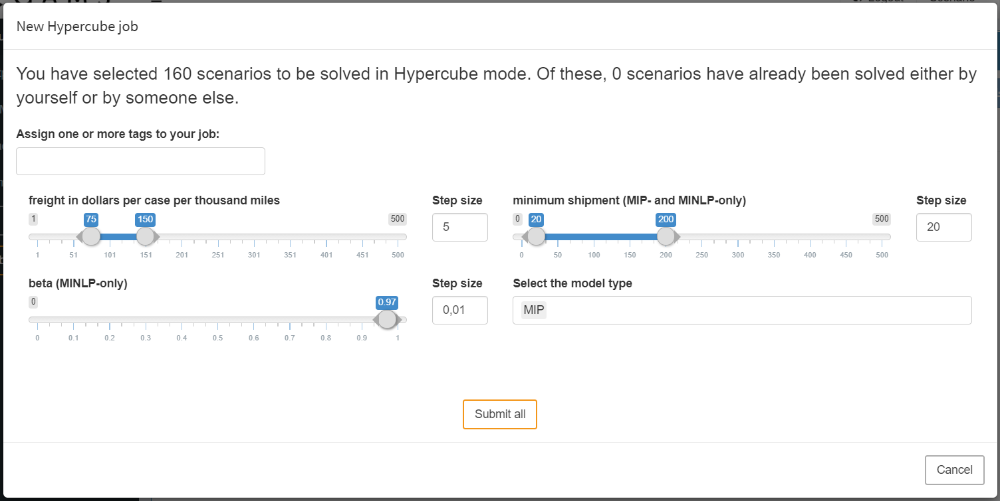

With MIRO version 2.1, the Hypercube Mode is deprecated and and no longer exists as a separate mode. You can now submit Hypercube jobs from the Base Mode if you are using GAMS MIRO with a GAMS Engine backend (GAMS MIRO Server or GAMS MIRO Desktop - boosted by GAMS Engine).
Hypercube Job
Introduction
Note:
If MIRO is connected to GAMS Engine, it is also possibile to configure and evaluate so-called Hypercube jobs. A Hypercube job describes the automated execution of a certain number of automatically generated scenarios that differ with regard to their parameterization.
Let's get back to our transport example: Among other things, we have seen that we can determine the freight costs for transporting goods from suppliers to markets. We also learned that MIRO allows us to submit this particular scenario and fetch the results once its done. But what if we want to solve a multitude of such scenarios with different parameterizations? Say, we are interested in finding out how our model behaves with regard to a change in freight costs as well as other input parameters? To avoid having to configure and solve each scenario individually, we can configure a Hypercube job. A Hypercube job allows us to automatically solve and examine a subset of the parameter space of our model. This is done by varying scalar model parameters (zero-dimensional GAMS parameters) within a given range. As a consequence, a large number of scenarios can be configured and analyzed at once.

Submission of a Hypercube job
A scenario is characterized by a particular set of model input (and output) parameters. If, for example, for a run of the transport model, the freight cost is set to 90 and the minimum shipment of goods is set to 100, then this parameterization characterizes the scenario (together with the other input parameters as well as attachments). The Hypercube configuration discussed here makes it possible to automatically submit several of those scenarios at once.
Job configuration
If MIRO runs with GAMS Engine backend, you can submit jobs via "Solve model" (synchronous execution) and "Submit job" (asynchronous execution) by default. If the Activate Hypercube module option is set, there is a third option: "Submit Hypercube".
A modal dialog opens when you click on it. In this dialog all scalar input widgets (sliders, dropdown menus, checkboxes, etc.) configured for the MIRO app are displayed. However, the display of some widgets has changed. They have been automatically transformed:

When we submit a normal job, we can specify the freight cost as well as the minimum amount of goods to ship. Those are zero dimensional values. The same scalars can now be specified within a given range: The sliders have now become slider ranges. In addition, we can set a step size for each slider range. Furthermore, the single dropdown menu for selecting the problem type has been replaced by a multi dropdown menu.
Tip:
Input widgets you defined for your scalars in the Base Mode are automatically expanded when submitting a Hypercube job.
The table below gives an overview of the scalar input widgets and their different appearance when submitting a Hypercube job.
| Single job | Hypercube job |
|---|---|
| Single slider | Slider range with step size selection |
| Slider range | Slider range with step size and combination-type selection |
| Single dropdown menu | Multi dropdown menu |
| Multi dropdown menu | Not supported yet |
| Checkbox | Multi dropdown menu with options yes and no |
| Date selector | Date selector |
| Date range selector | Date range selector |
| Text input | Text input |
| Numeric input | Numeric input |
| Parameter table | Parameter table |
The transformation of input widgets has the following implication for the submission of Hypercube jobs: Unless explicitly specified in the MIRO configuration of the model, each scalar input widget is expanded and the cartesian product over all scalars set by the user defines a Hypercube job.

In this example, the slider for freight in dollars per case per thousand miles was set by us to a range from 75 to 150 with a step size of 5. The slider configured in this way leads to 16 different variants.
- Variant 1: freight = 75
- Variant 2: freight = 80
- Variant 3: freight = 85 [...]
- Variant 16: freight = 150
For the scalar minimum shipment the slider was set to a range between 20 and 200 with a step size of 20. The resulting variants would therefore be:
- Variant 1: number of days for training = 20
- Variant 2: number of days for training = 40
- Variant 3: number of days for training = 60 [...]
- Variant 10: number of days for training = 200
The third slider for the scalar parameter beta is not set to a range but to a single value. Due to the non-existent variation of the scalar, only one variant results from it. The same is true for the last widget, a multi dropdown menu where we specify to only consider the MIP version of our model.
The cartesian product that results from the combination of all variations is now calculated: It is created from the different variants of the symbols freight in dollars per case per thousand miles (16), minimum shipment (10), beta (1) and Select model type (1) resulting in 16 x 10 x 1 x 1 = 160 individual scenarios.

It becomes clear that the number of scenarios resulting from a particular Hypercube job configuration can increase rapidly with the number of scalar that are expanded. Depending on how computationally intensive the underlying GAMS model is, the scenarios should be carefully configured.
Note:
The maximum number of scenarios that can be submitted in one job is limited to 10 000.
You may want to restrict certain input widgets to be transformed: This can be done in the MIRO Configuration Mode by unchecking the widget-specific option Should element be expanded automatically when submitting Hypercube jobs?. If this option is disabled, the widget will not be displayed in the "Submit Hypercube" dialog, but can still be set as usual in the input section.
Multidimensional Symbols:
Unlike scalar values, multidimensional symbols such as sets, parameters and multidimensional singleton sets cannot be varied within a Hypercube job configuration. The data remains fixed in every created scenario of a job. However, this does not mean that Hypercube jobs can only be used for zero dimensional symbols. In order to be able to vary data of multidimensional symbols using a Hypercube job, this can be implemented in the GAMS model itself. For example, you can use a scalar in the model and assign different data to a multidimensional parameter in the model depending on the value of that scalar. If this scalar value is now varied in a Hypercube job, this also affects the multidimensional parameter.
Job submission
In the modal dialog for submitting a Hypercube job you can see two more things besides the actual job configuration:
Job tags:
When submitting a Hypercube job, you can optionally
specify job tags which are an identifier attached to all
scenarios of a Hypercube job. They can help you identify
scenarios of a certain job or a group of jobs with
similar attributes. This means that you can use those
tags as part of your
database queries
in order to easily find certain scenarios that you are
interested in.
Scenarios that have already been solved:
MIRO looks into the database where your scenarios are
stored and checks whether a subset of the scenarios you
want to commit have already been saved. If it finds
results from previous runs, MIRO asks if it should
commit only the scenarios that have not yet been
executed, or if it should submit all of them again.
There are a number of reasons why you might want to
re-submit certain scenarios. We will elaborate on these
reasons in the next section that discusses the technical
details of how MIRO sets up a Hypercube job. If you are
reading this documentation for the first time, you might
want to skip this next advanced (sub)section. If you are
interested, just click on the headline.
Once you are happy with the set up of your Hypercube job, you can submit it. This triggers the expansion of all scenarios resulting from your configuration and sets up your Hypercube job. When a Hypercube job has been submitted, it is shown in the Job list in the GAMS interaction section.